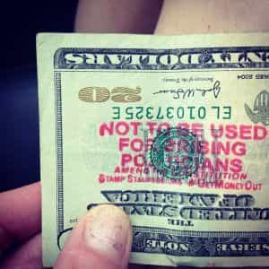

< < < Back
Why Free Market Economics Isn’t Working As Advertised – Return Of Kings
Since Newton’s Laws, physicists thought the universe behaved basically like a billiards table: an object in motion stays in motion on its trajectory forever unless an outside force acts on it. Einstein’s revelations changed all that; great masses distort space-time, basically warping our allegorical billiards table. An extreme gravitational field even can bend light. Tremendous masses can acquire so much matter that the escape velocity is greater than the speed of light, and anything sucked into one of these black holes is never seen again.
Actually, economics is pretty similar. The free market works great in the realm of pure theory, but in practice, it’s not as simple as that. Here’s what happened.
A brief economic history
In 1776—an auspicious year—Adam Smith wrote The Wealth Of Nations, the primary textbook of capitalist theory. He covered several subjects, including factory production. One of his most famous ideas is the “invisible hand” theory. Basically, an unregulated market will figure out a fair price on its own. Suppliers who set their prices too high will be undercut by others. Those that excessively lowball their prices won’t be able to stay in business. As the theory goes, a nation of producers trading with each other freely lifts the economy. That worked pretty well back in the days of independent farmers, bricklayers, blacksmiths, weavers, stonemasons, cartwrights, brewers, and so forth.
Government interference (including any sort of regulation) is seen as a drag on the economy. In many cases, that’s true, in particular price fixing and excessive red tape. The greatest believers in unregulated capitalism are Libertarians and Objectivists. We will explore some of the unexpected results of this laissez-faîre economics.
So that was then, back in the Age of Enlightenment when most people were either independent farmers or producers who owned their own farms or their own shops and tools. During the Industrial Revolution, fortunes were made from a shoestring by exploiting new technologies. Many of these new industries became huge trusts—railroads, steel mills, coal, oil, and so forth. The problem with monopolies is that the one seller can set any price they like for the product. Without any competition, this means that Adam Smith’s “invisible hand” effect doesn’t work. This is also true when there’s a small group of sellers that can work together to fix prices or divide up territories. Those things are illegal now, but that doesn’t mean it doesn’t happen.
Another problem is that this allowed the owner to live like a king, while paying the workers peanuts. Ownership and labor were now separated, unlike times before. The workers then barely scratched by in urban slums. Further, back in the day, belching smokestacks polluted the skies, the equipment was frequently unsafe, and the workers often had to work twelve hours a day (sometimes more). These sweatshops were cheap to run, but were miserable places to work.
This led to labor unions (fiercely resisted then) and also Socialism (which turned out to be pretty dysfunctional, especially the Communist variety). Capitalist countries in the Western world instituted environmental regulations, safety rules, child labor laws, and so forth. Then came the golden age of the 195os and 1960s in the USA, Germany, and Japan. Unfortunately, things got a little shaky for factory workers after that, beginning a long slide downhill.
Indeed, regulation does cost money. With today’s globalist free trade, factories largely left the Western world for sweatshops overseas. This has happened to call centers too. Quality usually suffers, but the only thing that matters to management is that they work for peanuts. All that is justified by overpaid CEOs moaning that their own country’s workers are too expensive and “besides, everybody else does that”.
Today, we’re basically back to the Robber Baron days. The only difference is today’s urban slums are not populated by workers, but by welfare recipients, and the middle class has to pick up the tab for all that. Even so, that’s just the beginning. When huge amounts of wealth are accumulated, the “free market” is no longer a level playing field. Here are some of the reasons why.
How big business distorts markets

If you have a great business idea, often you need a lot of capital in order to make it happen. When I was a teenager, I thought up an idea for satellite-distributed radio, making hundreds of channels available across the country. Since I didn’t have the money to get satellite broadcasts going and start manufacturing receivers, someone else got to invent XM Radio. Even if you’re only going to start a restaurant (which is a pretty dodgy investment), you’ll probably need at least a hundred thousand dollars. This item is not particularly unfair; it is what it is. Some other economic barriers to entry are worse.
The regulatory environment favors huge businesses. There’s a mountain of laws and red tape to wade through, and it really helps if you can afford a full-time legal department. For one example, a family farmer will struggle with certifying their crops as organic, but a large agribusiness firm has a department that takes care of those things.
Further, there’s the “regulatory capture” problem. Often regulators and large businesses get on much too friendly terms; then the regulators aren’t really doing their jobs any more. An extreme example is when former members of huge Wall Street companies get picked for top governmental regulatory jobs; if they see any funny business going on, do you think they’re going to rat out their former employers? It’s the ancient “Who watches the watchmen?” problem. In fact, this is just one example of how having connections helps the wealthy and powerful.
Countless big business lobbies work to influence the US Congress for favors. These rent-seeking measures are responsible for much crony capitalism, corporate welfare, and pork barrel politics. One of the more surreal examples was a measure to help manufacturers of wooden arrowheads, as a rider on the TARP bailout bill. There are small business lobbies too, but they don’t have same deep pockets funding. Many huge businesses will make large campaign contributions to both sides; no matter who wins, their bread is buttered.
Several times, military actions resulted on behalf of big businesses. That hasn’t exactly given the USA good press around the world. Further, the military-industrial complex likes dragged-out wars, for obvious reasons. Much could be done to trim waste; for instance, sourcing cheap fuel locally in Middle Eastern operations, rather than having it shipped from the USA (for a hefty markup) by contractors as it was during the second Gulf War. Avoiding spit-in-your-eye wars would would save even more money—and more importantly, lives.
Wall Street shenanigans

For the very rich, the stock market is more profitable too. Trading costs are proportionately lower with large lots, and institutional rates are available for the high rollers. You too can get in on the game, though a mutual fund or ETF will have a management fee. (Shop around and try to get under half a percent, if possible; a high management fee really eats into your profits over time.) The big stock market firms have automated trading systems that can place bids or orders much faster than any human trader can match, and they’re strategically located in data centers where they’ll be received a millisecond or two earlier than everyone else. For these (among other reasons), small investors can profit, but not as much as the big players.
Further, insider trading gives an advantage to those who have the right connections. Technically it’s illegal, but in practice, it’s a matter of not getting caught. For Congressmen, it’s not even illegal; they wrote the laws to exempt themselves. For instance, one of the Congressmen pushing for the body scanners in airports happened to be a big investor in the company making them.
Wall Street can get quite predatory. Someone with access to a huge amount of money (often supplied by bank leverage) can do a hostile takeover on a company by buying up over half of its stock. Sometimes this is assisted by illegally manipulating the stock price. As to what happens to the company, it’s either dissolved or run into the ground. Its assets are then sold off by the corporate raider, leaving all the workers unemployed. If you’ve seen the movie Wall Street, you know what I’m talking about.
That’s not a constructive use of the free market; that’s gaming the system. There certainly is a social impact to hundreds or thousands of people out of work and unable to pay their bills. The usual response to this by the laissez-faîre crowd amounts to “They lost their jobs because they’re not ambitious enough” or some other lame variant of “Let them eat cake.”
“Too big to fail”

This is from the first time around. Unfortunately, we forgot the lessons learned.
Back in 2008, when Wall Street got its fingers burnt (a long story, which I’ll hopefully describe in the future), the US government bailed out several entities with the Troubled Asset Relief Program. While it was debated, I remember how the talking heads were screaming that the world would end if the government didn’t pay up. In a truly free market, the banksters would’ve had no such recourse to get paid for making dreadful mistakes and crashing the economy.
One bank that I’ve been monitoring took the bailout money and invested in the stock market when it was at the bottom. I poured all the money I had available into the market too, though of course I didn’t have the government writing me a check for a few billion dollars of leverage. They bought up one of their competitors too; sure sounds like they were hard up for cash!
Note that out of the eighteen corporations bailed out by TARP, GM and Chrysler were the only ones that actually produce anything. With “casino capitalism”, profits are privatized and debts are socialized. Sounds pretty rotten, doesn’t it? Well, it gets worse.
The end results of plutocracy and globalism

The present free market system has enabled the ultra-rich to accumulate greater and greater amounts of wealth. They’re beginning to resemble medieval aristocracy. This has been going on for a while, too. (One banking family in particular is starting to get as inbred as the Spanish Hapsburgs. That’s one way of keeping the wealth in the family. If others follow suit, we’ll have to revise our stereotypes about incest being only for hillbillies with green teeth.) Society is becoming increasingly characterized by vast extremes of wealth, just as huge gravitational masses in space start sucking in all the nearby matter.
I can understand people wanting to make money. However, excess gets pointless after a while. If someone has ten billion dollars, how is his life going to be better off with ten billion more? Still, they’ll fight tooth and nail to keep from getting their taxes raised. When Congress made Bush the Younger’s tax cuts permanent for 2013 except for anyone making over $400K/year, there was quite a bit of screeching about their 4.6% tax break expiring. Although the graduated income tax has been criticized as a Communist measure, in this case it’s right that those who have benefited the most from the system should be paying back the most to keep it running.
Worse, the globalists don’t have much loyalty to their own countries, seeing borders and distinct cultures as barriers to making even more money. This is one reason why they’re so keen on their social engineering efforts. Another reason is that they don’t know—or don’t care—what it’s doing to the public. Although we’re getting closer to conditions back in the Robber Baron days, if things keep going as they are, we’re going to get dragged back to feudalism. Part of this social engineering involves pushing mass immigration, against the public’s wishes. These globalist elites are quite short-sighted; if they get their way, they’ll kill the goose that laid the golden egg. As it happens, that’s us.
In summary

Capitalism certainly does work better than Socialism. Still, laissez-faîre economics has no protection against the creation of vast extremes of wealth or the abuse of power. The system we have now is not the one we were supposed to get. It’s time to seek other alternatives, including distributism.
The only way to fix this will be to re-introduce sensible regulations, as existed before: the Glass-Steagall Act (which separated investment banking from commercial banking), the uptick rule to keep stocks from getting short-sold into the ground, and so forth. Other regulations should be simplified to allow small businesses easier access to get into the market. Further, campaign finances should be reformed in order to stop huge businesses from throwing their weight around in Congress. Finally, consumers can choose to spend their money with small businesses; this will help keep the money circulating in their community, rather than getting sucked into a big black hole.
Read More: What Every Man Needs To Know About Capitalism And Economics